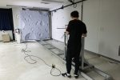
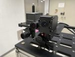
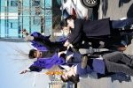
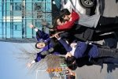

게시판은 웹 아카이브에 수집된 적이 없습니다. 아래 목록은 옛 대문 캡처 세 시점(2016·2017·2024년)에 실려 있던 최근 글 묶음을 합친 것이라 제목과 날짜까지만 남아 있고 본문은 복구하지 못했습니다.
Free Board 6건
연구실 소식
- 2019 IPIN Competition 우승
- 2017 IPIN Competition 우승
- 2017 마이크로소프트 국제 실내 측위 경연…
- 최성혁 박사과정, ICCAS 2016 Best Present…
- 국제 실내항법 경연대회 IPIN 2016 2년 연…
- 2015 IPIN Competition 우승
… 표시는 옛 대문이 긴 제목을 줄여 실어 뒷부분이 남아 있지 않습니다.
Gallery 5건
연구 갤러리



2016년 2월 졸업식

2016년 2월 졸업식
아카이브에 목록용 축소 이미지만 남아 있어 원본 크기 사진은 복구하지 못했습니다.